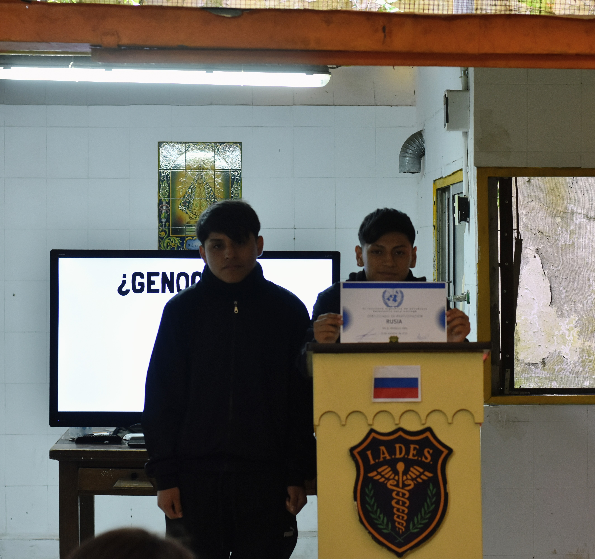
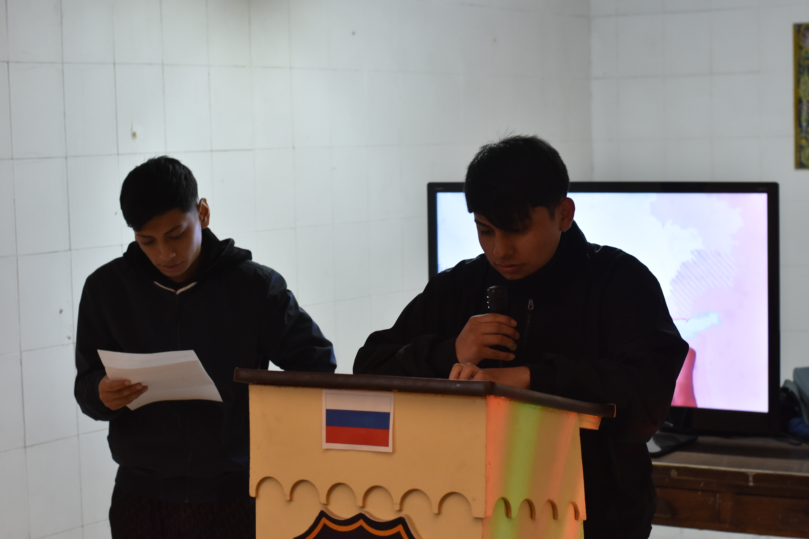
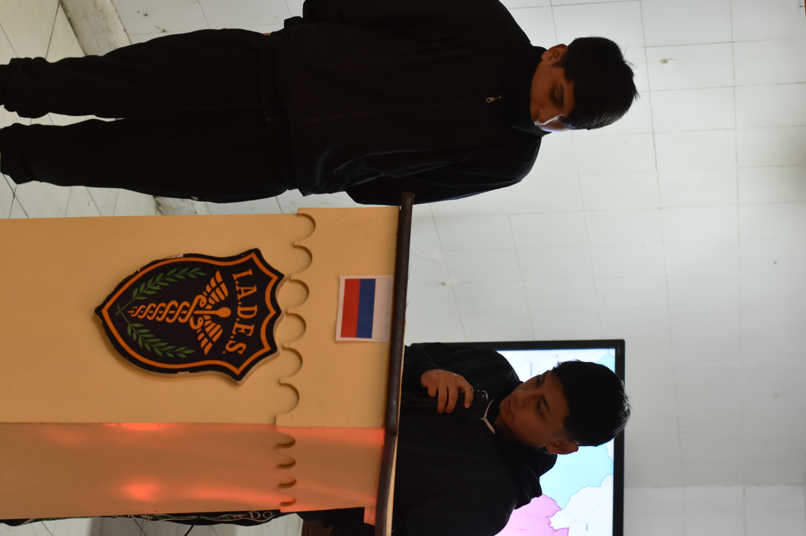

RUSIA

Estudiantes: Estrada Yonatan, Filici Martini y Narvaes Joseph
Honorable Presidencia, distinguidos delegados, la delegación de la Federación de Rusia se presenta ante esta Asamblea para expresar su posición frente a la crisis en Ucrania. Nuestra postura es firme y transparente: actuamos en legítima defensa propia y para proteger la vida y los derechos de nuestra gente.
Para entender nuestra posición, hay que mirar el mapa. La expansión de la OTAN hacia el este, avanzando sobre los acuerdos de la posguerra fría, representa una amenaza existencial para nuestra seguridad nacional. Nos han rodeado con bases militares cada vez más cerca de nuestras fronteras.

Desde el punto de vista territorial, Rusia necesita garantizar el acceso a sus puertos del Mar Negro. Para nosotros, Crimea y la histórica ciudad de Sebastopol no son solo un territorio, son la base de nuestra flota y nuestro acceso vital al mundo. Además, tenemos el deber de proteger a los millones de rusoparlantes en la región del Donbás, que comparten nuestra historia, nuestra cultura y nuestra fe ortodoxa. Ellos han sufrido el abandono y los ataques de un gobierno que no los representa.
Desde el punto de vista ético y legal, invocamos el principio de soberanía nacional, consagrado en el Artículo 2 de la Carta de las Naciones Unidas. Ningún país tiene derecho a intervenir en los asuntos internos de otro. Por eso, rechazamos categóricamente cualquier intento de la ONU de enviar fuerzas de paz o intervenir en nuestro territorio sin nuestro consentimiento. La soberanía no es un concepto abstracto: es la garantía de que ningún país poderoso decidirá por nosotros.

Sabemos que Ucrania y sus aliados occidentales nos señalarán y dirán que somos agresores. Pero nosotros sostenemos que estamos defendiendo a nuestro pueblo. Nos enfrentamos a un gobierno que llegó al poder mediante un golpe de Estado en 2014 y que está influenciado por grupos ultranacionalistas que buscan borrar nuestra historia común.
Por eso, Rusia pide a esta Asamblea que respete la soberanía de los Estados y que no imponga soluciones desde afuera. Exigimos que se escuche la voz de nuestro pueblo. La soberanía no se negocia. Muchas gracias.